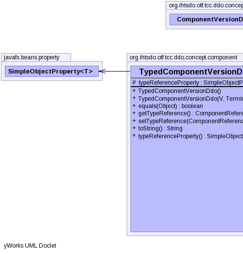
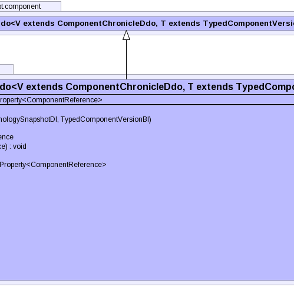

public class TypedComponentVersionDdo<V extends ComponentChronicleDdo,T extends TypedComponentVersionDdo> extends ComponentVersionDdo<V,T>
|  |  |
| Type | Property and Description |
|---|---|
javafx.beans.property.SimpleObjectProperty<ComponentReference> |
typeReference |
authorReferenceProperty, fxTimeProperty, moduleReferenceProperty, pathReferenceProperty, statusReferenceProperty| Modifier and Type | Field and Description |
|---|---|
protected javafx.beans.property.SimpleObjectProperty<ComponentReference> |
typeReferenceProperty |
chronicleunspecifiedUserUuid| Constructor and Description |
|---|
TypedComponentVersionDdo() |
TypedComponentVersionDdo(V chronicle,
TerminologySnapshotDI ss,
TypedComponentVersionBI another) |
| Modifier and Type | Method and Description |
|---|---|
boolean |
equals(Object obj) |
ComponentReference |
getTypeReference() |
void |
setTypeReference(ComponentReference typeReference) |
String |
toString()
Returns a string representation of the object.
|
javafx.beans.property.SimpleObjectProperty<ComponentReference> |
typeReferenceProperty() |
afterUnmarshal, getAdditionalIds, getAnnotations, getChronicle, getComponentNid, getConcept, getIdCount, getPrimordialComponentUuid, getUuids, getVersionCount, getVersionsauthorReferenceProperty, fxTimeProperty, getAuthorReference, getFxTime, getModuleReference, getPathReference, getStatus, getStatusString, getViewCoordinateUuid, informAboutUuid, moduleReferenceProperty, pathReferenceProperty, setAuthorReference, setFxTime, setModuleReference, setPathReference, setStatus, setStatusString, setViewCoordinateUuid, statusReferencePropertyprotected javafx.beans.property.SimpleObjectProperty<ComponentReference> typeReferenceProperty
public TypedComponentVersionDdo()
public TypedComponentVersionDdo(V chronicle, TerminologySnapshotDI ss, TypedComponentVersionBI another) throws IOException, ContradictionException
IOExceptionContradictionExceptionpublic String toString()
toString in class VersionDdopublic final javafx.beans.property.SimpleObjectProperty<ComponentReference> typeReferenceProperty()
public final ComponentReference getTypeReference()
public final void setTypeReference(ComponentReference typeReference)
Copyright © 2013 International Health Terminology Standards Development Organisation. All rights reserved.